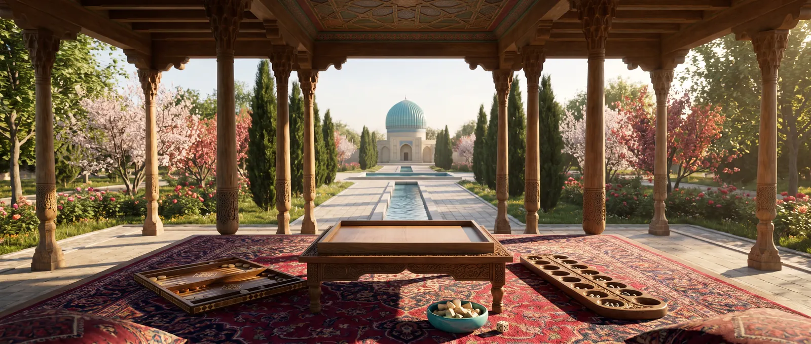

Shatranj, kichik shaxmat
Temur saroyida hamma bilgan va katta shaxmat undan ko‘lami bilan farq qilgan 8 × 8 taxtadagi o‘yin.

Shaxmat Hindistonda VI asr atrofida chaturanga nomi bilan paydo bo‘ldi. Sosoniylar Eronida uni chatrang deb atashgan, arab istilosidan keyin esa o‘yin shatranjga aylanib, butun islom dunyosiga — Andalusiyadan Movarounnahrgacha tarqaldi. Yevropa uni arablar va forslardan o‘rgandi.
Donalar
Shoh istalgan tomonga bir katak yuradi, rokirovka yo‘q. Farzin, shoh maslahatchisi, diagonal bo‘yicha faqat bir qadam qo‘yadi, fil — jangovar fil — diagonal bo‘yicha roppa-rosa bir katak osha sakrab, istalgan donadan o‘tib ketadi. Ot va rux bugungi ot va ladya kabi yuradi. Piyoda bir katak yuradi, ikki emas, oxirgi qatorda farzinga aylanadi.
Farzin va fil kuchsiz, shuning uchun shatranj zamonaviy shaxmatdan sekinroq: debyut — shoshilmasdan saf tortish, ustalar esa oldindan yodlangan boshlang‘ich joylashuvlar — tabiyalarni o‘ynashgan.
Qanday yutishgan
Motdan tashqari raqibga pat qo‘ygan o‘yinchi ham yutgan — arab mualliflarining ko‘pchiligi shunday hisoblagan. Raqibni birorta donasiz «yalang‘och shoh» bilan qoldirgan ham yutgan; agar raqib darhol shu bilan javob qaytara olsa, o‘yin durang bo‘lgan.
Ustalar va masalalar
IX–X asrlarda Bag‘dodda al-Adliy va as-Suliy o‘ynagan va kitob yozgan; partiyalar yonida ular mansubalar — shaxmat masalalari va etyudlarini to‘plashgan. As-Suliyning bir pozitsiyasi, «as-Suliy brillianti», ming yilcha yechilmay qolgan.
Katta shaxmat yonida
Temur davrida shatranj yo‘qolib ketmadi: katta shaxmat saroy va bilimdonlar o‘yini edi, kichigi esa umumiy o‘yin bo‘lib qoldi. Davrning eng yaxshi o‘yinchisi Ali ash-Shatranjiy ikkalasini ham o‘ynagan. Shatranjdan ko‘p narsa Temur shaxmatiga deyarli o‘zgarishsiz o‘tdi: farzin, ot, rux va piyoda yurishlari, aylanish va pat bilan g‘alaba.
Bizning «O‘yinlar bog‘i»da shatranj Myurrey «Shaxmat tarixi»da (1913) to‘plagan qoidalar bo‘yicha o‘ynaladi. Pozitsiya uch marta takrorlanganda va 70 yurish olishsiz o‘tganda durang — o‘yin har doim tugashi uchun bizning zamonaviy qo‘shimchamiz.